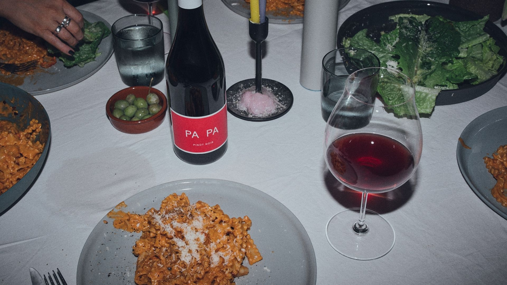
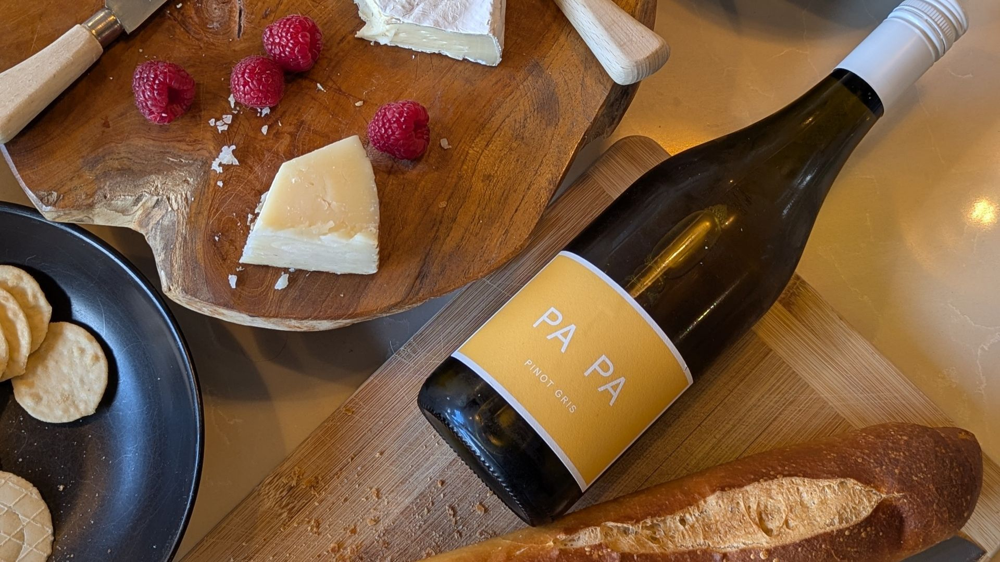

The wines
Easy to love.
Easy to drink.
Two wines. One philosophy. PA PA is built on a simple idea: create wines you’ll always be happy to open.
Consistently enjoyable, approachable and thoughtfully made. The sort of wines you’re proud to pour, confident to recommend and always pleased to see on the table.
PA PA
Pinot Noir
2025
Fresh. Vibrant. Silky.
Ripe cherry, wild strawberry and a hint of spice, with a smooth, flowing palate and soft, fine tannins. Light to medium-bodied and beautifully balanced, it delivers flavour and finesse without ever feeling heavy.
Rewarding for the wine enthusiast. Effortlessly enjoyable for everyone else. Thoughtfully made without ever asking to be taken too seriously.
Vintage2025
RegionMount Gambier, South Australia
Alcohol13.5%
StyleFresh, bright and silky

What people are saying
“A lively, supple, prancing pony of a Pinot… bright-fruited, aromatically lifted and savoury-edged, punching well above its weight.”
“Bright, fresh and puckish, yet with plenty of depth to enjoy. Nicely done.”
“A neat, easy-to-enjoy drink — and it holds its pinosity.”
Recognised
Selected for The Weekend Australian’s Top 100 Australian Wines of 2025.
Recognised by Nick Ryan as Australia’s Best Pinot Noir Under $40.

“The bottle you’ll always be happy to open.”

PA PA
Pinot Gris
2025
Fresh. Refreshing. Textural.
Juicy pear, red apple and a touch of citrus, with a soft texture that gives it a little extra depth. Clean, balanced and incredibly versatile.
Fresh enough to stay refreshing. Balanced enough to suit the whole table. The kind of wine people simply enjoy and then reach for again.
Vintage2025
RegionMount Gambier, South Australia
Alcohol12.6%
StyleFresh, dry and gently textural

“A drink-and-don’t-think vibe.”Tom Kline, WinePilot
Every bottle. Every vintage.
Consistency matters.
Where to find PA PA
Out in the world.
And around the table.
Restaurants & wine bars
PA PA is poured by the glass at selected restaurants and wine bars.
Bottle shops & retailers
Find individual bottles through selected independents and major retail partners.
Online soon
Direct ordering will arrive when the PA PA online store opens.
PA PA